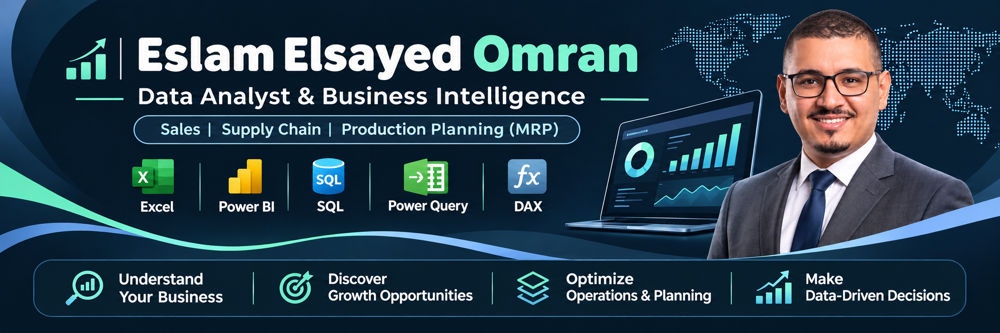
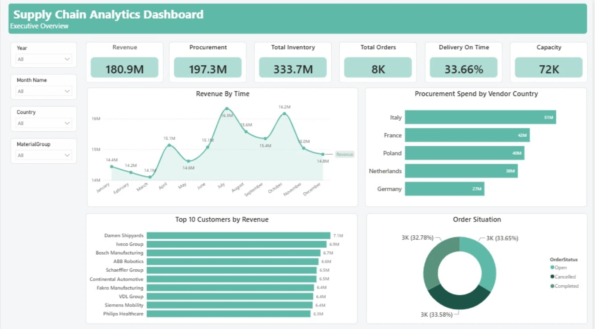
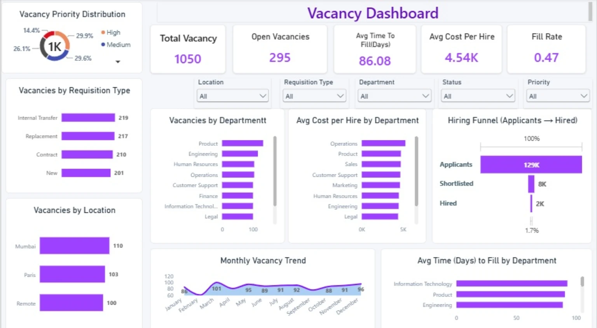

JAN 2026 — PRESENT
Data Analyst · Madar Group Egypt
Sales analytics, production planning, CRM analysis, digital campaign reporting, and e-commerce sales analytics.

Discover the patterns, opportunities, and insights behind your numbers — and use them to make smarter decisions across sales, customer relationships, digital commerce, operations, and production planning.
I'm a Data Analyst who brings 10 years of hands-on sales experience to business intelligence and analytics. My work spans sales performance, CRM and customer analysis, digital campaigns and e-commerce sales, alongside production planning and operational reporting.
I use Power BI, Excel, SQL, and business context to connect information across functions, explore what drives performance, and turn complex data into practical insights. My focus goes beyond dashboards: understanding the business questions behind the numbers and helping teams make better-informed decisions.
Practical sales experience helps me interpret performance in its real business context.
Connect sales, CRM, digital channels, inventory, and production planning for a broader view.
Create reporting and analysis designed to support actions, not just display metrics.
A career shaped by hands-on business experience and a growing focus on analytics, reporting, and decision support.
Sales analytics, production planning, CRM analysis, digital campaign reporting, and e-commerce sales analytics.
Business-oriented reporting and analytics projects. Project timelines and engagement details available upon request.
Hands-on commercial experience informing a practical understanding of customers, sales performance, and business priorities.
Your data can support more than routine reporting. It can help you explore the questions that matter next.
Explore sales trends, revenue drivers, product mix, and emerging opportunities.
Understand CRM performance, customer behavior, digital campaigns, and e-commerce activity.
Evaluate markets, segments, and expansion opportunities with stronger evidence.
Investigate stock levels, procurement, delivery performance, and planning needs.
Monitor business KPIs, trends, and exceptions with timely reporting.
Use historical performance and operational data to inform production and resource planning.
Select any project to explore its business context, analytical approach, dashboard screenshots, and decision-support value. Each project has its own dedicated page.

Connecting sales, procurement, inventory, warehousing, and logistics to provide a unified view of operational performance.
Read case study
A cross-functional view of supplier performance, production quality, inventory, shipments, and commercial outcomes.
Read case study
Comparing discharge costs, length of stay, and facility-level patterns to support informed hospital performance reviews.
Read case study
Analyzing hiring demand, candidate pipelines, recruitment costs, and time-to-fill across departments and locations.
Read case studyEvery business has different goals, challenges, and opportunities. My approach starts with understanding what matters to your business, then turning data into clear insights that support smarter decisions and measurable progress.
Identify your goals, priorities, key questions, and the decisions you need to make.
Bring relevant data together, improve its quality, and build a reliable analytical foundation.
Investigate performance, trends, customer behavior, operational efficiency, and growth opportunities.
Turn analytical findings into clear business recommendations and practical next steps.
Build dashboards and reporting solutions that help you monitor KPIs and respond to change.
A practical toolkit for preparing data, building models, analyzing performance, and communicating findings.
Structured datasets, transformations, and reliable analytical foundations.
Clear dashboards and KPI views tailored to business needs.
Analytical findings presented in language decision-makers can use.
Whether you're looking to understand performance, uncover growth opportunities, improve operations, or make a critical business decision, let's explore what your data can reveal.
Let's turn your data into a clearer path forward.
Based in Egypt · Available for Remote Work Worldwide